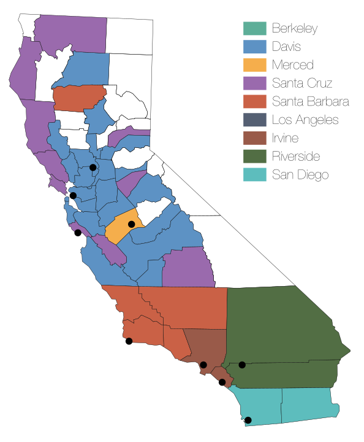
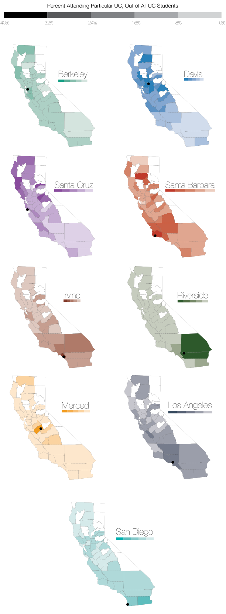

Choosing a college can be an arduous task, as students are deciding where they will be spending the next four years of their life. For more than 200,000 students, the University of California system's nine undergraduate universities fulfill their academic needs. Deciding which of the schools to attend is dependent on several social and academic factors, including location.

This data represents the home counties of all freshmen California residents who attended a UC school over the three year period from 2005-2008. The county is shaded according to the UC most attended by students from that county. Only Berkeley and Los Angeles did not have a county where they were the most popular school. Some of the counties are empty because so few people live in those counties, and the data would not be statistically significant.
There are many qualifications for this data, and any conclusions should be drawn with caution. There are several other factors apart from location that affect school choice. Not all UCs have the same majors, and some will specialize in certain fields. Prestige can also matter: Berkeley and LA do not have a majority in any county, presumably because their reputation overrides spatial preference.
Moreover, even counties vary widely: some have better high schools than other counties - and this might skew the distribution. Still, the pattern shows that there is a correlation between the home counties of students and their choice of UC. The division between Northern and Southern California is pretty clear. For many of the counties, the most attended school was the UC closest to that county. However, Tehama County in the northern part of the state sends most of its students to Santa Barbara, showing that location can be overridden by other factors (it is worth noting however that only 13 students went to a UC from Tehama County over the three years).
It is very difficult to tell the motivations of students regarding their school choice. While some may wish to stay close to home, others might want to leave their hometown for various reasons. We cannot conclude why, but it is clear that location does matter when it comes to determining one's college.

The choropleths show the percentage of people from that county who attended that UC out of the total attending a UC. Very few counties have more than 40% of students who chose a particular UC; these are the darkest. The UC maps show a clearer picture of where each UC primarily draws from. Riverside has only two main counties: the two closest to it. Irvine draws heavily from Orange County and Merced dominates Merced County. With the exception of Berkeley and LA, each UC is the most attended in the county where it is located. Los Angeles and Berkeley are mostly balanced, but LA is slightly more popular in the southern half of California, and Berkeley is slightly more popular in the northern half. Looking at the maps as gradients, instead of as a collection of counties, can give us an insight into the distribution of the UC student population of California.
I created the maps using Adobe Illustrator, using data from Institutional Analysis, Student Research and Information at UC Davis. This infographic looks best on the screen I used to code it (Chrome + Yosemite + 13"). Please send all comments / questions / critiques / suggestions to jmahabal@berkeley.edu. You can pick up the final .pdf document here. Thanks for reading!